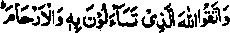
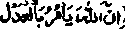
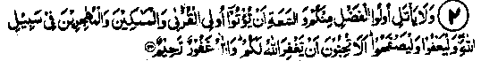
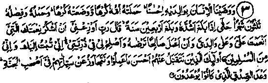

Chapter Three · Section (b)
Section (b)
Ayaat on Importance of Maintaining Kinship
The above Ayaat are quoted as an example, as giving more details will increase the volume of this book. These are besides the three that are fully discussed hereunder. In addition to these, Allah Ta'ala has stressed this subject repeatedly in the Holy Qur’an, which confirms the great importance of this topic. Ka‘b Ahbar Radhiallaho anho swears by Allah Ta'ala and then says that it is mentioned in the Tauraat (old Testament) "Fear Allah and be good to kith and kin; I shall prolong your life, make it easy for you to get the things which bring comfort, and drive away all difficulties from you". Allah Ta'ala has, at many places in the Qur’an, ordered the maintenance of kinship. As for example it is said;

"Fear Allah Whom you beg to fulfil your needs; and be careful of kinship. (an-Nisaa: 1).
In another place it is said:
"Fulfil the obligations towards the kith and kin".
Lo! Allah enjoins justice and kindness (to the people) and to show beneficence to kith and kin". (an-Nahl: 90).
Yet in another place it is said, "Allah Ta'ala orders you uphold Tauheed and recite La Ilaha Illallah’.
Allah Ta'ala has ordered fulfilment of three obligations; He .further prohibits three things: indecency, acts against Shari'ah, cruelty to people. Allah then says: "He exhorts you in order that you may take heed".
Uthman Bin Mazoun Radhiallaho anho has narrated that he had great love for Rasulullah Sallallaho alaihe wasallam, which led him to become a Muslim; Rasulullah Sallallaho alaihe wasallam used to ask him to accept Islam and he became a Muslim in deference to him. Islam had not yet taken root in his heart. Once he was sitting with Rasulullah Sallallaho alaihe wasallam who was talking to him and turned to another side, in such a manner as if he was talking to someone invisible. Later he turned to him (Uthman) and told him that Jibra'i! Alaihissalaam had come and revealed to him the Ayat (

upto its end. Uthman felt very pleased with the subject matter of the Ayat and he wholeheartedly accepted Islam. After that,Uthman Radhiallaho anho went to Abu Talib, Rasulullah’s uncle, and told him that he was with his nephew when the particular Ayat was revealed. Abu Talib told him to follow Muhammad Sallallaho alaihe wasallam, as he will be benefited by Allah; he might be a true Rasul or not, but he teaches you good manners and ways of kindliness.This is the advice of a person who did not accept Islam, but said that whether the claim of Muhammad to prophethood is true or false, the teachings of Islam are the best in all respects, as these bring about improvement in manners and social conduct. Alas! These days the Muslims have a very poor reputation in this respect.
2. And let not those who posses dignity and ease among you swear not to give the near of kin and to the needy, and to fugitives, for the cause of Allah. Let them forgive and show indulgence. Yearn ye not that Allah may forgive you? Allah is Forgiving, Merciful. (an-Nur: 22)
Note: This Ayat and its translation has also been given in Chapter I, at No. 18. The purpose in its repetition here is to take heed and to remind ourselves of the behaviour of our ancestors and of the admonitions from Allah Ta'ala on this subject at that time. It was a very serious and important happening that the wife of Rasulullah Sallallaho alaihe wasallam enjoying the respectability of a mother for all Muslims, was falsely blamed by (some of) her "children". Among these gossip-mongers were the near relatives too, who were being given material support by her father, Abu Bakr Radhiallaho anho, who was obviously deeply grieved and shocked by their wrong behaviour. Yet, Allah Ta'ala advised (him) to forgive them and overlook their fault, upon which Abu Bakr Radhiallaho anho promptly acted and increased their allowances. Do we nowadays treat our relatives in this way, when they put false blame on us or wrongly accuse our family members with something serious and dirty. On the contrary, even after reading the above Ayat of the Holy Qur’an,our enemity will extend not to their children alone but to all those who associate with them. How can we justify such an attitude, when Allah Ta'ala’s clear orders are that we must not stop giving them any type of help that they need? But those who have true faith and have firm conviction about the Greatness and Glory of Allah Ta'ala and His sacred commandments, have proved and shown practically how to obey Him with total submission. May Allah Ta'ala bless them with His Mercy and Kindness worthy of His Divine Honour and Dignity, and exalt them to the highest spiritual level! They, too, had hearts with all the weaknesses and deep sense of honour, but all these were subject to the pleasure of Allah Ta'ala.

3. And We have commanded unto man kindness towards parents. His mother beareth him with reluctance, and bringeth him forth with reluctance, and the bearing of him and the weaning of him is thirty months, till, when he attaineth full strength and reacheth forty years, he saith: My Lord! Enable me that I may give thanks for the favour wherewith Thou hast favoured me and my parents, and that I may do right acceptable unto thee. And be gracious unto me in the matter of my seed. Lo! I have turned unto thee, repentant, and Lo! I am of those who are Muslims. Those are they from whom We accept the best of what they do and overlook their evil deeds. (They are) among the owners of Jannah. This is the true promise that they were promised (in the world), (al-Ahqaaf: 15-16).
Note: Allah Ta'ala has repeatedly exhorted mankind about kindness to kith and kin and the parents, as has been explained under the previous Ayaat In this Ayat particular emphasis has been laid on being kind to the parents. This commandment about parents appears three times in the Qur’an. First, in Surah Ankaboot, then in Surah Luqman and thirdly, here in Surah Ahqaaf, where it appears with a greater emphasis. The writer of "Khazin" has narrated that the Ayat was revealed in honour of Abu Bakr Radhiallaho anho. His Companionship with Rasulullah Sallallaho alaihe wasallam commenced when they travelled to Syria. Rasulullah Sallallaho alaihe wasallam was then twenty years old and Abu Bakr was only eighteen. During the journey they stopped near a Jujube tree. Abu Bakr Radhiallaho anho went to meet a monk who lived nearby and Muhammad Sallallaho alaihe wasallam rested under the tree. The Monk enquired from Abu Bakr about the person sitting under the tree. Abu Bakr told him that he was Muhammad bin Abdullah bin Abdul Muttalib. The Monk said, "By Allah! he is a Nabi; no one has sat under that tree after Isaa Alaihissalam. He is the last of the Ambiya! When Rasulullah Sallallaho alaihe wasallam reached the age of forty and was bestowed with ‘Nubuwwat’ (apostleship), Abu Bakr Radhiallaho anho embraced Islam. After two years, when he (Abu Bakr) reached the age of forty, he prayed, "Allah! Enable me to offer proper thanks for the reward that has been bestowed upon me and my parents". Ali Radhiallaho anho has said that no one among the Mohajireen (Immigrants) has had the privilege of Abu Bakr, both whose parents and children were all Muslims. The Ayat in Surah Ankaboot is more emphatic about the parents, i.e. be kind to them even if they are non-Muslims. When the disbelieving parents are to be treated kindly and graciously by the order of Allah Ta'ala, the orders about the Muslim parents are obviously of much greater importance.
Sa‘d Ibne Abi Waqas Radhiallaho anho has said that, when he embraced Islam, his mother resolved not to eat or drink anything till Sa‘d gave up the religion of Muhammad Sallallaho alaihe wasallam. Food and drink used to be forced into her mouth. Thereupon the Ayat in Surah ‘Ankaboot’ was revealed. It shows the severity of admonition, that, even in such difficult circumstances, the parents are to be treated kindly. However, if they order a person to forsake the true faith (Unity of Allah),they are not to be obeyed. When someone asked Hasan Radhiallaho anho as to what was the limit of kindness to be shown to the parents, he replied, “To spend all that you possess on them and to obey every command that they make, except if it is to commit a sin". Such has been the teaching of Islam for the Muslims. They were to remain good to the polytheist parents: even if the latter tried hard to turn a Muslim son to polytheism, he must remain good to them but shun ‘Shirk’ (polytheism), and must not obey them in this regard.
No one is to be obeyed against an obligation to the Creator.
Despite the parent’s persistent efforts to make the son polytheist, the duty of the son is to be good to them. One of the Ahadith regarding the Ayat in Surah Luqman says that this particular Ayat was revealed at the time of the incident of Sa‘d Radhiallaho anho. The Hadith quotes Sa‘d as saying that he used to treat his mother extremely cordially and, when he became a Muslim, his mother exclaimed, "What have you done ? You must leave Islam or else I shall give up eating and drinking till death comes to me, upon which the people will reproach you for being the cause of my death". Sa‘d requested her not to take that step and said that he could not give up his religion. She did not eat or drink for two consecutive days. On that Sa’d told her that, even if she had one hundred lives and gave up all, one after the other, still he would not give up Islam. When she witnessed his determination, she started taking food and drink The famous theologian Abul Laith Rahmatullah alaihe says that, even if Allah Ta'ala did not emphasize the rights of parents, common sense indicated that their rights are important and obligatory. So much so, that Allah Ta'ala’s commandment about this has been given in all the Divine Books, namely Taurah. Injeel, Zaboor and Qur’an, and all the Ambiya Alaihimussalaam received revelations about it with full emphasis.
The above three Ayaat were concerning the good treatment of the kith and kin. The next three Ayaat contain warning against their ill-treatment